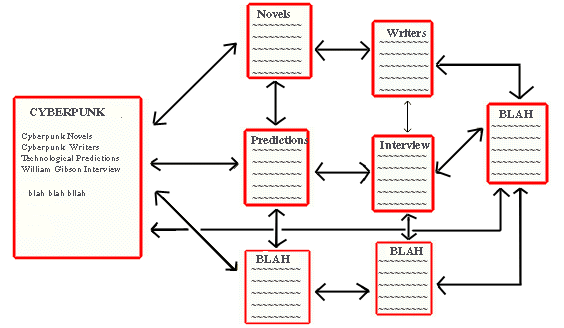
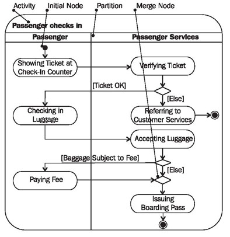

[Project design] 基本設計(画面設計とDB設計)
こんにちは。明月です。
この投稿は基本設計(画面設計とDB設計) に関する説明です。
以前にプロジェクト工程に関して説明しました。
link - [Project design] プロジェクトを工程(ウォーターフォール vs アジャイル)
プロジェクト工程というのは全体的にプロジェクトをどの順番で進めるかを設定することなら、基本設計はプログラムをどのように作ろうかを設定することです。
ウォーターフォールの工程での基本設計はUML(Unified Modeling Languagu:統合モデリング言語)のユーズケース、アクティブダイアグラムを通ってユーザがプログラムをどの目的で使うかどのように利用するかを設定することです。必ず、ユーズケースやアクティブダイアグラムではなく、ストーリボードを通って設定することも悪くないです。

ユーズケースのreference - https://www.javatpoint.com/

アクティブダイアグラムのreference - https://sourcemaking.com/

ストーリボードのreference - http://nmasse.com/
この方法の利点はプログラムの目的を正確に設定することができるしプログラムを一緒に作成するメンバーとコミュニケーションがしやすいことと結果物に確実な目標設定が可能なことがあります。問題は工程で上の設計書をすべて作成すると時間がすごく長くなる欠点があります。そして次の工程の詳細設計とコーディングの工程に進める時、お客様とユーザの追加要請事項ができた場合に変更の柔軟性がずいぶん厳しくなります。
なので、私の場合は別にUMLやストーリボードの設計を省略する方法です。(もちろん、お客様の要請がある場合は作成しますが、時間と金額に関して説明します。)
でも、すべて省略することではプログラムの目標を設定することが難しいですが、私は画面設計(Htmlコードでプログラムを作成)してコメントに利用してストーリボードの流れを作成します。
画面設計というのは別にエクセルやパワーポイントのワードプロセッサーで作成することではなく、Apacheを起動してVisual codeを利用して直接にhtmlを作成します。
この方法の利点はウェブプログラムというのはWAS(Web Application Server)からパーシングされたhtmlタイプとデータをブラウザーに転送することです。つまり、ドキュメントで基本設計を作成してもコーディングする時に必ずやるべき作業ということです。
データ領域(.json)は例なので、実際にはすこし差異があるかも知りませんが、htmlで直接に作成して設計するほうが個人的に見やすいし、直感的ではないかと思います。
そして、ユーズケースやアクティブダイアグラムを作成しても正確なプログラムの算出物ではないので、発注者が考えるプログラムと開発者が作成するプログラムの認識差異が発生する可能性があります。でも、htmlを作成する方法で設計書を作成するとそのギャップがずいぶんなくなるし、追加要請や修正があってもどうせ画面を修正しなければならないので、柔軟性がよくなります。
この方法で欠点ももちろんあります。htmlタグとcss、javascriptに関して確実に用法を分からないと作成することができない領域なのでプログラムのスキルがなければ、作成することが大変になります。でも、個人的な考えでウェブ開発者がhtmlタグとcss、javascriptをしらないことは。。でも、たまにいらっしゃってます。ってますね。
そしてhtmlを直接に作成する部分なので、時間もかなり掛かる作業になります。でも、私の考えが開発者がマウスでドキュメントを作成することよりキーボードでいろんなコードを打ちながらドキュメントを作成することが何か格好いいと思う昔の開発者なので個人的にこの方法を好きです。
そして画面設計はそのようにしてDDL(Data Definition Language: データ定義言語)を作成します。
DDLというのは定義言語なので、簡単にデータベースのテーブルを作成することです。そしてそれをスクリプトファイル(.sql)で管理します。
でも、画面設計は違い、DDLで作成したら全体的に関係図をよく理解できません。でも、プログラムを開発するためのいいオープンソースの無料ツールがすごく多いです。
私の場合は最近はDB browserツールでDbeaverがあります。
link - [Tools] Dbeaver(無料Sql queryブラウザツール)
これが個人的にデータベースのクエリ分析ツールですごく便利ですが、このツールにはテーブルを作成すると自動にER図(Entity Relationship Diagram)を作成する機能があります。
スクリプトを作成する時には関係が良く見えませんでしたが、このようにツールを利用したら別にER図を作成することか、ドキュメントを作成しなくてもいいではないかと思う利点があります。
個人的に基本設計はこのようにします。
この方法に関して利点はどうせやらなければならない作業を設計するところに含めて、やることで全体工程の時間をすごく短縮することができるし、追加事項、修正に関しても柔軟性がすごく良いでしょう。
欠点はやはり開発の経験がある方やコードに関して知っている方ではないなら作成することができない方法です。つまり、上の方法で運用するためにはチーム員の全体が開発スキルが必要という意味です。
自分の経験では様々なプロジェクトでチームメンバーの全員が開発者ではない場合も少しあります。(開発者といいますが、タグやデータベースを扱い方法を全然知らない方もいる時も。。。)
もちろん、テストまでやると思えば全員が開発者ではなくても構いないですが、問題はこの方が設計もやることです。それのためか、日本の開発プロジェクトの工程はウォーターフォール工程が多いです。自分はドキュメントで設計だけして、コーティングは他の方に任せること。結局、変なプログラムになること？
日本のプロジェクトの以外にはアメリカなどのプロジェクトはほぼ開発者およびプログラム言語をよく知っている方が比率が高いので上の方法でプロジェクトを進める時が多いです。
もちろん、上の方法論が正解ではないですが、少なくても私の経験には良かったなと思った工程ですね。
ここまで基本設計(画面設計とDB設計) に関する説明でした。
ご不明なところや間違いところがあればコメントしてください。
- [Project design] プログラム最終テスト - ST(System test(Standard, Scenario))2021/10/26 19:10:07
- [Project design] プログラム結合テスト - IT(Integration test)2021/10/25 20:12:17
- [Project design] プログラム検証とテスト - Unitテスト2021/10/22 19:34:09
- [Project design] プログラム制作(コーディング) - クラス作成方法2021/10/20 19:28:09
- [Project design] プログラム制作(コーディング) - 関数作成方法2021/10/19 21:01:32
- [Project design] 詳細設計(インターフェース設計と抽象化作業)2021/10/18 18:23:15
- [Project design] 基本設計(画面設計とDB設計)2021/10/17 21:21:11
- [Project design] 要件定義(要求事項整理)2021/10/15 19:28:58
- [Project design] プロジェクトを工程(ウォーターフォール vs アジャイル)2021/10/14 18:36:04
- [Design pattern] 2-5. フライウェイトパターン(Flyweight pattern)2021/10/29 19:48:27
- [C#] 59. ウィンドウフォーム(Window form)にコントロール(Control)を使い方法2021/10/29 19:45:43
- [Design pattern] 2-4. デコレーターパターン(Decorator pattern)2021/10/28 20:11:13
- [C#] 58. ウィンドウフォーム(Window form)を作成する方法、そしてウィンドウメッセージとキュー2021/10/27 20:35:44
- [Design pattern] 2-3. ブリッジパターン(Bridge pattern)2021/10/27 20:32:21
- [Design pattern] 2-2. コンポジットパターン(Composite pattern)2021/10/27 20:30:54
- [Design pattern] 2-1. アダプターパターン(Adapter pattern)2021/10/26 19:12:40
- [Project design] プログラム最終テスト - ST(System test(Standard, Scenario))2021/10/26 19:10:07
- [Project design] プログラム結合テスト - IT(Integration test)2021/10/25 20:12:17
- [Python] Seleniumライブラリを使う方法(自動ウェブテスト、ウェブスクレイピング)2021/10/25 19:29:00
- [Design pattern] 1-5. プロトタイプパターン(Prototype pattern)2021/10/22 19:35:45
- [Project design] プログラム検証とテスト - Unitテスト2021/10/22 19:34:09
- [C#] 57. コーティング規約2021/10/21 18:57:02
- [C#] 56. 値の初期化及び基本データ値(default)を設定する方法、そして原始データのnull処理、?と??の使い方2021/10/21 18:54:41
- [C#] 55.namespaceとusing、そしてpartialの使い方2021/10/21 18:51:39